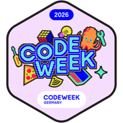
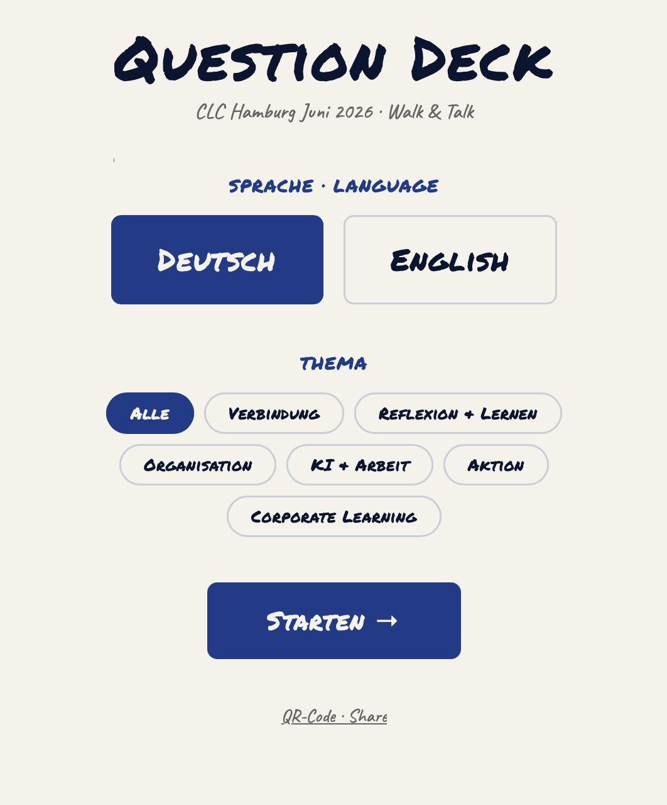
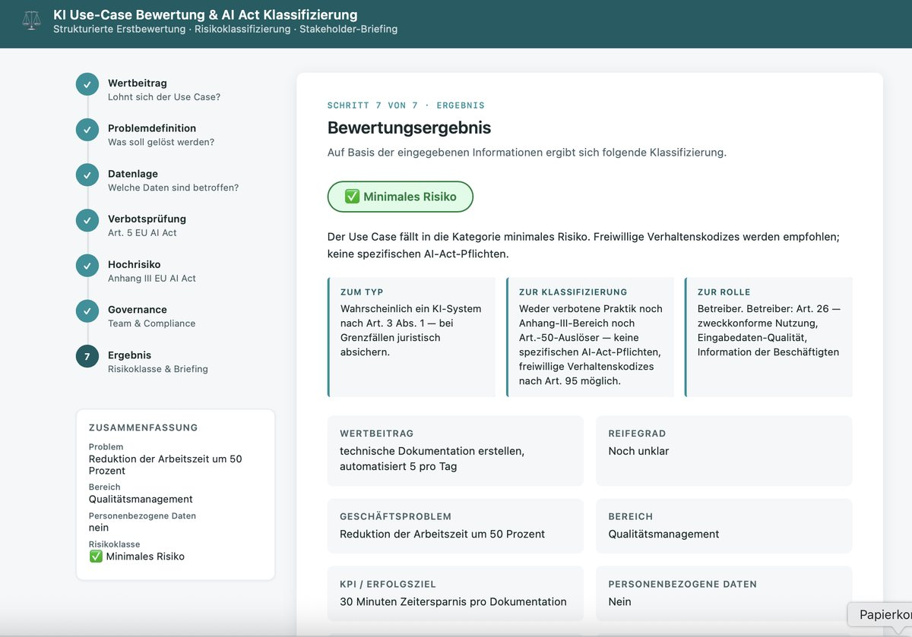

Wer prüft die Quellen, wer beurteilt die Ergebnisse? Ich zeige Teams in Unternehmen, Bildungseinrichtungen und Redaktionen, wie sie KI in ihre Arbeit einbauen, ohne blind auf den Output zu vertrauen. Mein Handwerk kommt aus dem Journalismus: Nachfragen, Quellen prüfen, genau beschreiben.
Wer KI nutzen will, muss sie sauber steuern. Deshalb beginnt meine Arbeit vor den Tools: bei den Aufgaben und Prozessen, die Dein Team tatsächlich hat. Ganz oldschool: „human first“. Ich zeige, was KI gut kann. Und genauso deutlich, wo sie danebenliegt. KI als Werkzeug zu nutzen, kann man lernen. Und das Urteil bleibt immer beim Menschen.
Wer KI sofort produzieren lässt, bekommt plausiblen Text mit Lücken. Deshalb arbeite ich in vier Schritten: erst analysieren, dann prüfen und entscheiden, dann produzieren, dann gegen Kriterien testen. Diese Sequenz steckt in jedem meiner Trainings.
„Vorher hatten wir KI im Team nur als bessere Suchmaschine genutzt, jetzt wissen wir, wie man sie strukturiert einsetzt: erst prüfen, dann arbeiten lassen, dann kontrollieren. Man merkt deutlich, dass hier eine fundierte Methode und journalistische Genauigkeit dahinterstehen. Wir arbeiten seitdem als Team spürbar strukturierter zusammen. Wir werden definitiv wieder auf Yvonne zukommen, sobald wir bereit für den nächsten Schritt sind. Klare Empfehlung.“
Vier Wege, wie ich mit Teams arbeite
01
AI-Literacy-Workshops
Der EU AI Act verpflichtet Unternehmen und Organisationen, die KI einsetzen, die KI-Kompetenz ihrer Mitarbeitenden zu fördern (Art. 4). Ich baue die Workshops auf die Aufgaben Deines Teams: was KI kann, wo sie scheitert, wie man Ergebnisse prüft und was Datenschutz und Regulierung verlangen. Auf Deutsch oder Englisch, in Präsenz oder online.
02
Recherche- und Verifikationstraining
Halbtags bis mehrtägig: Redaktionen, Forschungsteams und Bildungseinrichtungen lernen an eigenen Rechercheaufgaben, wie sie Quellen prüfen, Halluzinationen erkennen und Belege sauber dokumentieren.
03
Lernprogramme entwerfen
Mehrmonatige Blended-Learning-Programme: Webinare, Aufgaben zwischen den Terminen, Live-Sessions. Ich baue den Bogen von der Bedarfsanalyse bis zur Auswertung.
04
Facilitation und Moderation
Workshops, Webinare, Community-Formate. Ich gestalte den Raum so, dass Gruppen mit unterschiedlichem Vorwissen ins Arbeiten kommen.
Meine Referenzpunkte kommen aus Redaktionen: Faktendruck, Zeitdruck, gesunde KI-Skepsis. Genau dort setzt meine Lehre an.
Formate, die Du direkt buchen kannst
Vier Workshops als Beispiele. Ich arbeite mit Learning Arches nach Kaospilot, mit Liberating Structures und mit Connection before Content. Zum Start gehört die Auftragsklärung, da schauen wir, was genau passt. Ob aus diesen Beispielen oder etwas anderes. Zugeschnitten auf Bedarf und Ziel.
2 × 90 Minuten online oder halber Tag vor Ort
Prüfwerkstatt: Vom Briefing bis zur Prüfroutine
Dein Team lernt, KI so zu briefen, dass Belege mitkommen. Dann prüft es KI-Texte im Wettlauf, findet die Stellen ohne Fundstelle und schreibt seine eigene Prüfroutine.
Gut für wissenschaftliche Institute, Stiftungen, Presse- und Kommunikationsstellen.
→ Ausprobieren: Was würdest Du prüfen?
Ein erfundenes KI-Dossier zum Forschungsstand Homeoffice. Tippe die Stellen an, die Du vor der Weitergabe prüfen würdest. Dann löse auf.
Viele Unternehmen haben daraus Konsequenzen gezogen.
Halber Tag · für Teams bis 16 Personen
Frontier-Labor: Wo hilft KI Deinem Team wirklich?
KI glänzt bei manchen Aufgaben und versagt bei scheinbar einfachen. Ethan Mollick nennt das die gezackte Grenze. Dein Team testet seine eigenen Aufgaben und hält auf einer Karte fest, wo KI Zeit spart und wo sie welche kostet.
Gut für Teams in Redaktionen, Kommunikation, Wissenschaft und Verwaltung. Auf Wunsch mit einem Frontier-Check jedes Quartal.
→ Ausprobieren: Wo verläuft die Grenze?
Fünf Aufgaben. Schätze, ob KI-Chatbots sie heute meist gut lösen oder oft unzuverlässig sind. Stand Ende 2026, die Grenze verschiebt sich.
Eine Aufgabe aus der Mathematik-Olympiade lösen
Gegenstände auf einem Foto zählen
Fünfzig Ideen für einen Veranstaltungstitel sammeln
Eine Quelle samt Seitenzahl nennen
Ein langes Geschäftsgespräch über viele Runden stimmig führen
Halber oder ganzer Tag · zum Jahresauftakt
Teamklausur: Was bleibt bei uns?
Dein Team entscheidet bewusst, wofür es KI einsetzt und wofür nicht. Grundlage sind Ethan Mollicks Gründe für den Verzicht: lernen wollen, Fähigkeiten erhalten, Mühe als Botschaft. Am Ende steht eine Team-Charta.
Gut für Teams und Führungskräfte, die zum Jahresstart klären wollen, wie sie mit KI arbeiten.
→ Ausprobieren: KI oder lieber selbst?
Vier Aufgaben. Entscheide, ob Du KI nehmen würdest. Es gibt kein Richtig oder Falsch, nur gute Gründe.
Ein Dankesschreiben an eine langjährige Kollegin
Ein Protokoll aus dem Transkript einer Besprechung
Eine neue Kollegin arbeitet sich ins Fachgebiet ein
Eine erste Gliederung für einen Förderantrag
90 Minuten · Weihnachtsaktion im Dezember
Phishing-Detektive: Erst die fieseste Mail bauen, dann jagen
KI schreibt Betrugsnachrichten heute in Sekunden. Dein Team dreht den Spieß um: Es baut selbst die gemeinste Weihnachtsmail und lernt dabei, jede zu erkennen.
Gut für Teams bis 20 Personen, auch als Familienausgabe mit Kindern ab 10.
→ Ausprobieren: Finde die fünf Fallen
Eine erfundene Weihnachtsmail. Tippe die verdächtigen Stellen an.
Von:
Ihr Paket mit Weihnachtsgeschenken liegt in unserem Lager.
Vom Journalismus zum Learning Design ins AI Rabbit Hole und zurück
PROFILMOIN
Ich bringe Menschen ohne Technik-Hintergrund dazu, KI im Arbeitsalltag einzusetzen. Gelernte Journalistin, praxiserprobte Entwicklerin für Lernprogramme, Workshops, KI-Makerdays und Blended-Learning-Formate. Co-Regioleitung der Corporate Learning Community in Hamburg. 2026 abgeschlossen: Vollzeit-Ausbildung zur agilen KI-Managerin (DEKRA/WBS) & AI DONE RIGHT (Barbara Lampl). Ich mag Automatisierungen, interessiere mich für Security Awareness Facilitation und suche ausdauernd nach schlauen Lösungen. Seit 2026 begleite ich mit YP Learning Design for AI Adoption Teams bei der KI-Einführung und agilen Transformation. Themen: KI für die Recherche, Security Awareness für Journalist*innen, Advanced Prompting, Claude Code und GitHub.
DAS KANN ICH GUT
KI-Workshop-Design & Delivery (Hands-on)
User-Enablement-Strukturen & Lernpfade
Blended Learning Programme (5+ Monate)
DSGVO-Sensibilität & Regulatorik
Advanced Prompting & Use-Case-Discovery
Prozessanalyse & Projektsteuerung
KI-Governance & EU AI Act (DEKRA)
Lern-Tools, Dashboards und Automatisierungen mit Claude Code
Security Awareness Facilitation mit Planspiel: vier Spezialeinheiten, ein gekaperter Account, ein Countdown. Dazu ein Blick hinter die Kulissen, wie das Material mit Claude entstand.
Workshops für Schüler*innen und Lehrende: „Sicher im Alltag mit KI – Kompaktkurs für Lehrkräfte“, „Der Anruf: Cyberangriff als Planspiel“ und „Phishing-Detektive“, ebenfalls als Planspiel.

07.10.2026
AI Unconference Berghs Stockholm in Berlin
01.10.2026
Female AI Barcamp, Hamburg Media School
Session „Sag nicht ‚Die KI hat das gemacht‘“ mit Susanne Molter und Nicola Peschke: Wie formulieren wir, damit unsere Kompetenz sichtbar wird?
AI.Women Hackathon, Kühne Logistics University Hamburg
Mentorin beim größten KI-Hackathon für Frauen in Deutschland (laut AI.Women) mit 300 Teilnehmerinnen (GitHub, Claude Code, Prompting, Produktentwicklung)
Sep. 2026
Uni Tübingen
KI-Enablement mit Fokus auf Claude Projects für das Team des Lehrstuhls für Medienwissenschaft.
Für diese Organisationen habe ich in den letzten Jahren frei gearbeitet: Weltreporter (Co-Geschäftsführung), Goethe-Institut, FES Medienakademie, Universität Tübingen, Lie Detectors, Spotlight Verlag (heute ZEIT Sprachen), managerSeminare, Unicum Verlag, telc, Münchner Stadtbibliothek und Rautenstrauch-Joest-Museum Köln. Angestellt war ich zuletzt bei tactile.news in Lüneburg (Workshops und Consulting) und Freischreiber (Co-Geschäftsführung).
ZERTIFIKATE & WEITERBILDUNGEN
Zeitraum
Zertifikat
Aussteller
2026
AI DONE RIGHT
Barbara Lampl
2026
DEKRA Agile KI-Manager*in (inkl. KI-Governance, EU AI Act, ISO 42001, KI-Risiko, PSM I und PAL I)
WBS Training / DEKRA / Scrum.org
2026
Advanced Prompt Engineering for Journalists
Knight Center for Journalism in the Americas (Joe Amditis)
2025
AI & Learning Design Bootcamp – FRAME™-Methodik
Maven / Dr. Philippa Hardman
2024/2025
Designing & Facilitating Learning Spaces I + II
KAOSPILOT
2024
Generative AI for Media Professionals Masterclass
Maven (Jeremy Caplan & Nikita Roy)
2019
Train-the-Trainer
Reporter-Akademie, Berlin
Vier Dinge zum Ausprobieren
Ich baue kleine Werkzeuge, die je eine Lernidee tragen. Klick rein.

Question Deck
Fragenkarten für Gesprächseinstiege, gebaut für die Corporate Learning Community Hamburg. Die Idee dahinter: Gruppen arbeiten besser, wenn sie erst miteinander reden. Verbindung kommt vor Inhalt.
Eine Übungswerkstatt für Prompts. Ich gebe einen Prompt ein, das Tool zeigt Lücken nach einem festen Raster, ich arbeite sie nach. Am Schluss vergleiche ich beide Ergebnisse blind und entscheide selbst, welches besser funktioniert.
→ AusprobierenRuft Claude live auf. Du meldest dich kurz an, um es zu nutzen.

KI-Use-Case-Bewertung
Ich beschreibe ein KI-Vorhaben in sieben Schritten, das Tool ordnet es in die Risikoklassen des EU AI Act ein und macht daraus ein Briefing für Stakeholder. Die Idee dahinter: erst einordnen, dann bauen. Das Urteil bleibt beim Menschen.
Ein Reflexionsspiel: 13 Situationen aus dem Arbeitsalltag, von Phishing bis zu KI-Risiken. Kein Score, keine Rangliste. Nach jeder Antwort gibt es eine Einordnung und eine Transferfrage für den eigenen Alltag. Das Leitmotiv: KI arbeitet. Der Mensch urteilt.
![Sketchnote zur Session „Sag nicht ‚Die KI hat das gemacht‘“ beim 1. Female AI Barcamp an der HMS: links Sätze, mit denen man den eigenen KI-Einsatz benennt, etwa „Ich definiere Themen und Struktur, die KI macht Vorschläge zum Content“; in der Mitte eine Frau und ein Roboter am Laptop mit der Frage „Wer bestimmt über wen?“; rechts Wolken zur Zukunft 2036 mit den Fragen „Wünschenswert?“, „Welche Annahmen über Frauen, KI und Arbeit stecken hinter den Zukunftsbildern?“ und „Was können wir heute tun?“](img/sketchnote-barcamp.jpg)